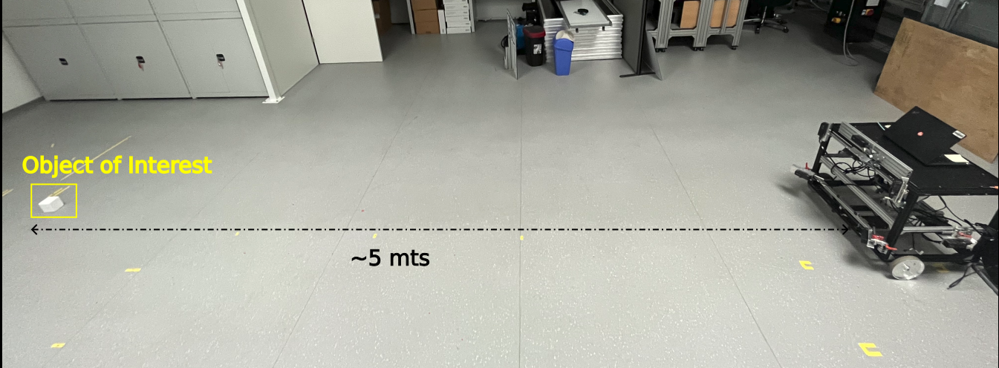
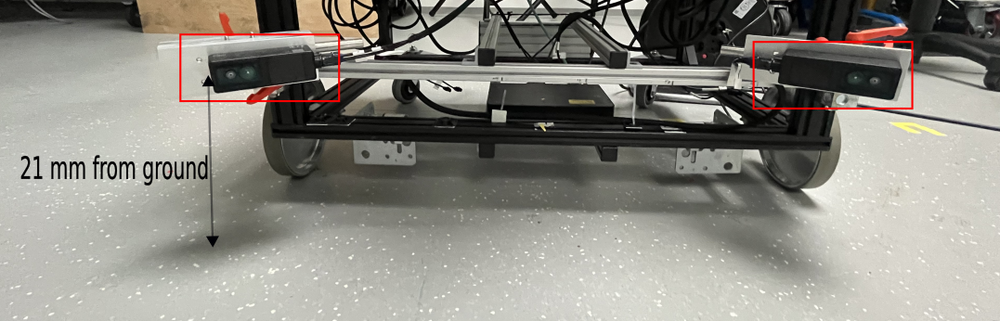

ODS Performance evaluation
The O3R-ODS performance for an AGV depends upon various factors. This whitepaper gives presents a evaluation strategy for benchmarking
ODS Performance analysis
How to read the data
Please refer to the iVA ODS recording documentation to find out more details on how to record and import our open source hdf5 data files.
How to analyze the data
At which frame the object is detected
The code snippet below serves as an example to analyze the data recorded during a robots parkour run. The following code snippet analyzes the True Positive Test case i.e the maximum distance between the vehicle and the object when it is detected by the ODS system.
Test Scenario:
Place an object of interest at a distance of 5 m - 7 m from the robot: that is enough free space wo an object in front of the camera
Launch the ODS application instance via ifm Vision Assistant (iVA)
and start recording
Driving the robot towards the object at the desired speed: testing multiple speeds, especially for smaller objects close to the floor might be beneficial for understanding the ODS performance limits.
Test Scenario

Camera Mounting Height
This is an exemplary test case: please see the mounting guide for suggested mounting positions and heights.

Below you can find an exemplary output of data as streamed and displayed using the iVA.
RGB STREAM |
ODS STREAM |
|---|---|
|
|


Question:
In the recorded data, at which frame does ODS detect the obstacle. Provide the distance from user coordinate-system origin (that is robot location) to the object. Please find the script to reproduce the following images from the recorded data.
## create a distance map based on the recorded data occupancy grid data
def get_distance_map_data(stream_ods):
"""
Input: ODS data stream
Output: Distance Map (Time vs Distance), Frames where the Object is detected in ROI
This function reads the ods data stream from recorded data and
outputs an image
- where each column represents the each occupancy grid in a stream
- Each row in a column of distance map represents the first non-zero value
(if exists) along the each row in a Occupancy Grid
"""
# Array of all Occupancy grids in a stream_ods
occupancy_grids_array = np.array(stream_ods[:]['image'])
total_occupancy_grids = occupancy_grids_array.shape[0]
rows_in_occupancy_grid = occupancy_grids_array.shape[1]
# We are interested in frame when the object is detected in ROI
frames = []
distance_map = np.zeros(occupancy_grids[:,0,:].shape)
for occupancy_grid in range(total_occupancy_grids):
for row in range(rows_in_occupancy_grid):
# check for a non-zero value in each row
idx=np.nonzero(occupancy_grids_array[occupancy_grid,row,:]>127)[0]
if idx.size==0: # No non-zero value found in a row of occupancy grid
distance_map[occupancy_grid,row]=200
else:
distance_map[occupancy_grid,row]=idx[0]
if (85 <= row <= 115): # ROI is considered as 85 to 115 rows in occupancy grid
frames.append(occupancy_grid)
distance_map = -distance_map
return distance_map
distance_map = get_distance_map_data(stream_ods)
plt.figure()
plt.imshow(distance_map.T,cmap='jet',interpolation='none')
# Plot ROI
plt.axhline(85, color='r', linestyle = 'dashed')
plt.axhline(115,color='r', linestyle = 'dashed')
plt.xlabel('Time')
plt.ylabel('Distance')
plt.title('Distance Map of Recorded Data')
Output:
False positive evaluation
Above the distance map representation of the recorded ODS data is show.
This distance map is a representation of closest non zero distance per occupancy grid row (that is movement direction) over time. This representation takes a bit of time to get used to but gives a compact representation of object distance as color information over time per geometric Y-location.
If high color differences (for example “color contrasts”) appear, this is equivalent to quick change of object distance at that location. Non-continuous color changes indicate that the detected object distance changes quickly over frame counter, i.e:
the object detection was “just picked up on”
the object detection was lost, for example the object left the field of view
the object might not be a true positive, but a false positive, for example a point cloud or occupancy grid artifact
Example evaluation of this distance map and occupancy grid
From output above, we can say that the object started to appear in the occupancy grid from frames between 125 to 140. We see there are no non-zero values in the Region of Interest (ROI) until the obstacle is detected and this can deduce that there are no false positives detected in the data. The following snippet plots the 16 occupancy grids (8 Occupancy grids before and after object detection in ROI)
# create an empty figure object
plt.figure()
range_occ_grids=np.arange(frames[0]-8,frames[0]+8)
for i,frame in enumerate (range_occ_grids):
plt.subplot(4,4,i+1)
plt.imshow(stream_ods[frame]['image'],cmap='gray',interpolation='none')
plt.axhline(85, color='r', linestyle = 'dashed')
plt.axhline(115,color='r', linestyle = 'dashed')
plt.colorbar()
if frame == frames[0]:
plt.title(f'Object detected in frame {frame}')
else:
plt.title(f'Frame {frame}')
Output

The following script shows how to track the distance between the User-Coordinate-System and first object detected in ROI.
#############################################
# Copyright 2021-present ifm electronic, gmbh
# SPDX-License-Identifier: Apache-2.0
#############################################
# %% Import Libraries
import math
import logging
from pathlib import Path, PosixPath
import h5py
import numpy as np
from matplotlib import pyplot as plt
from scipy.spatial import ConvexHull
import skimage.measure
import skimage.color
import skimage.filters
logger = logging.getLogger(__name__)
# %%
def get_data_from_h5(filepath: PosixPath) -> tuple:
with h5py.File(filepath, "r") as data:
streams = list(data["streams"])
logger.info(f'available streams: {list(data["streams"])}')
stream_2d_left = data["streams"]["o3r_rgb_0"]
stream_2d_right = data["streams"]["o3r_rgb_1"]
stream_3d_left = data["streams"]["o3r_tof_0"]
stream_3d_right = data["streams"]["o3r_tof_1"]
stream_ods = data["streams"]["o3r_app_ods_0"]
data_2d_left = np.asarray(stream_2d_left)
data_2d_right = np.asarray(stream_2d_right)
data_3d_left = np.asarray(stream_3d_left)
data_3d_right = np.asarray(stream_3d_right)
data_ods = np.asarray(stream_ods)
for s in streams:
logger.info(f"stream: {s}")
logger.info(f"stream content: {data['streams'][s].dtype} \n")
return data_2d_left, data_2d_right, data_3d_left, data_3d_right, data_ods
def get_distance_map_data(data_ods: np.ndarray, roi: list = [85, 115]) -> tuple:
"""
Retrieves the distance map of a recorded iVA dataset
Args:
stream_ods (np.ndarray): input data stream ODS
Returns:
tuple: 'time vs distance' of a recorded data
"""
data_ods = np.array(data_ods[:]["image"])
total_occupancy_grids = data_ods.shape[0]
rows_in_occupancy_grid = data_ods.shape[1]
# We are interested in the frames where the object is detected inside in ROI
frames = []
distance_map = np.zeros(data_ods[:, 0, :].shape)
for occupancy_grid in range(total_occupancy_grids):
for row in range(rows_in_occupancy_grid):
idx = np.nonzero(data_ods[occupancy_grid, row, :] > 127)[
0
] # non-zero values per row
if idx.size == 0: # Non non-zero value found in a row of occupancy grid
distance_map[occupancy_grid, row] = 200
else:
distance_map[occupancy_grid, row] = idx[0]
if (
roi[0] <= row <= roi[1]
): # ROI is considered as 85 to 115 rows in occupancy grid
frames.append(occupancy_grid)
distance_map = -distance_map # invert map
frames = sorted(list(set(frames)))
return distance_map, frames
def connected_components(gray_image: np.ndarray) -> tuple:
"""evaluate the connected components on a gray scale image
Args:
gray_image (np.ndarray): input image
Returns:
tuple: label images and counter
"""
binary_mask = gray_image > 127
labeled_image, count = skimage.measure.label(binary_mask, return_num=True)
return labeled_image, count
def get_obj_pos(obj):
coords = obj["coords"]
x_coord, y_coord = None, None
try:
hull = ConvexHull(coords)
for v in hull.vertices:
if x_coord == None and y_coord == None:
x_coord = coords[v][0]
y_coord = coords[v][1]
else:
if (
coords[v][1] < y_coord
): # check difference in y coordinates only not Euclidean distance
x_coord = coords[v][0]
y_coord = coords[v][1]
except Exception as e:
logger.warning(e)
pass
return x_coord, y_coord
def distance_tracker(data_ods: np.ndarray, frames: list, roi: list = [85, 115]):
"""Distance from user coordinate frame origin to the first object detected in ROI vs Time
Args:
data_ods (np.ndarray): input data stream ODS
frames (list): frames where object is detected in ROI
Returns:
tuple: list of frames, coordinates of nearest object of interest
"""
check_bbox = True
check_centroid = False
frame_detected = []
coordinates = []
for f in frames:
occ_frame = data_ods[f]["image"]
labeled_image, _ = connected_components(occ_frame)
object_features = skimage.measure.regionprops(labeled_image)
for obj in object_features:
if check_bbox:
# (min_row, min_col, max_row, max_col)
# https://scikit-image.org/docs/stable/api/skimage.measure.html#skimage.measure.regionprops
min_row, min_col, max_row, max_col = obj["bbox"]
if min_row > roi[0] and max_row < roi[1]: # bbox inside the roi
frame_detected.append(f)
x_coord, y_coord = get_obj_pos(obj)
if check_centroid:
c_row, c_col = obj["centroid"][0]
if roi[0] < c_row < roi[1]: # centroid inside the roi
frame_detected.append(f)
x_coord, y_coord = get_obj_pos(obj)
coordinates.append([x_coord, y_coord])
return frame_detected, coordinates
# %%
def main():
logging.basicConfig(level=logging.DEBUG, format="%(message)s")
logging.getLogger("matplotlib").setLevel(logging.WARNING)
logging.getLogger("skimage").setLevel(logging.WARNING)
FILENAME = "8. pallet_jack_105deg.h5"
FILEPATH = Path("/path/to/local/file/directory/")
FP = Path.joinpath(FILEPATH, FILENAME)
(
data_2d_left,
data_2d_right,
data_3d_left,
data_3d_right,
data_ods,
) = get_data_from_h5(FP)
distance_map, frames = get_distance_map_data(data_ods)
# Plot the distance map
plt.figure(100)
plt.imshow(distance_map.T, cmap="jet", interpolation="none")
plt.colorbar()
plt.axhline(85, color="r", linestyle="dashed")
plt.axhline(115, color="r", linestyle="dashed")
plt.xlabel("Frame counter #frame")
plt.ylabel("Y-coordinates in occ pixel space")
plt.title("Distance Map of Recorded Data")
# Plot a selection of occupancy grids before and after the detection
plt.figure(200)
range_occ_grids = np.arange(frames[0] - 8, frames[0] + 8)
for i, frame in enumerate(range_occ_grids):
plt.subplot(4, 4, i + 1)
plt.imshow(data_ods[frame]["image"], cmap="gray", interpolation="none")
plt.axhline(85, color="r", linestyle="dashed")
plt.axhline(115, color="r", linestyle="dashed")
plt.colorbar()
if frame == frames[0]:
plt.title(f"Object detected in frame {frame}")
else:
plt.title(f"Frame {frame}")
# Distance Tracker
frame_detected, coordinates = distance_tracker(data_ods, frames)
trans_x, trans_y, trans_z = data_3d_right["extrinsicOpticToUserTrans"][
0
] # get extrinsic calibration values
user_origin = [100, 100]
trans_x_grid_space = (trans_x * 1000) / 50
trans_y_grid_space = (trans_y * 1000) / 50
distances = []
for coord in coordinates:
if coord[0] is not None:
distances.append(
math.sqrt(
(coord[0] - user_origin[0] - trans_y_grid_space) ** 2
+ (coord[1] - user_origin[1] - trans_x_grid_space) ** 2
)
)
distances = np.convolve(
distances, np.ones(5) / 5, mode="valid"
) # smooth distance information
plt.figure(301)
for d, f in zip(distances, frame_detected):
plt.plot(f, d * 50, "b+")
plt.xlim(0, len(data_ods) + 1)
plt.xlabel("frame counter")
plt.ylabel("Distance in mm")
dist_y_max = max(distances) * 50
plt.title(
f"detected object: distance tracking over time\n maximum distance: {int(dist_y_max)} mm"
)
plt.figure()
pos = np.arange(130, 166)
for n in range(len(pos)):
plt.subplot(6, 6, n + 1)
plt.imshow(data_ods[pos[n]]["image"] > 127,
cmap="gray", interpolation="none")
try:
idx = frame_detected.index(pos[n])
plt.plot(coordinates[idx][1], coordinates[idx][0], "r+")
except ValueError as e:
pass
plt.colorbar()
plt.title(f"frame {pos[n]}")
if __name__ == "__main__":
main()
# %%